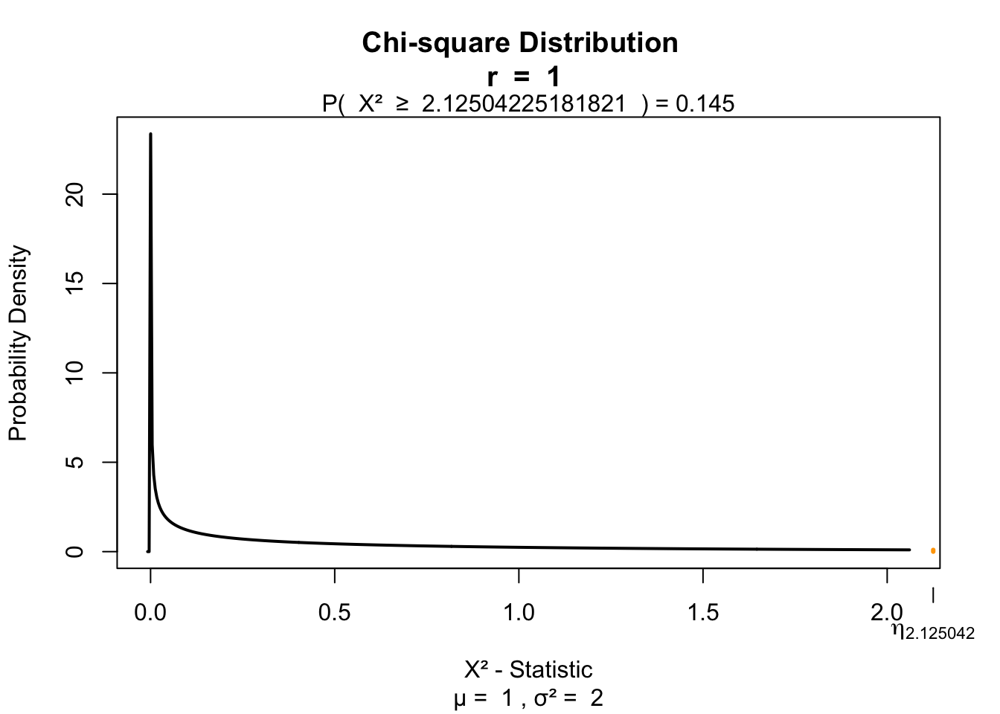
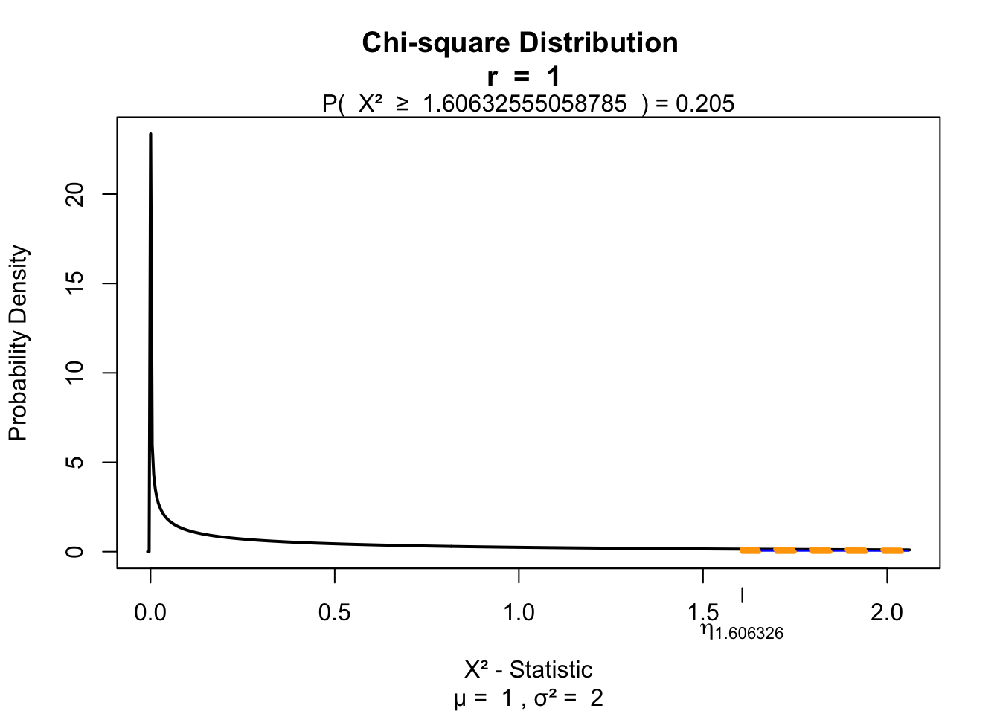
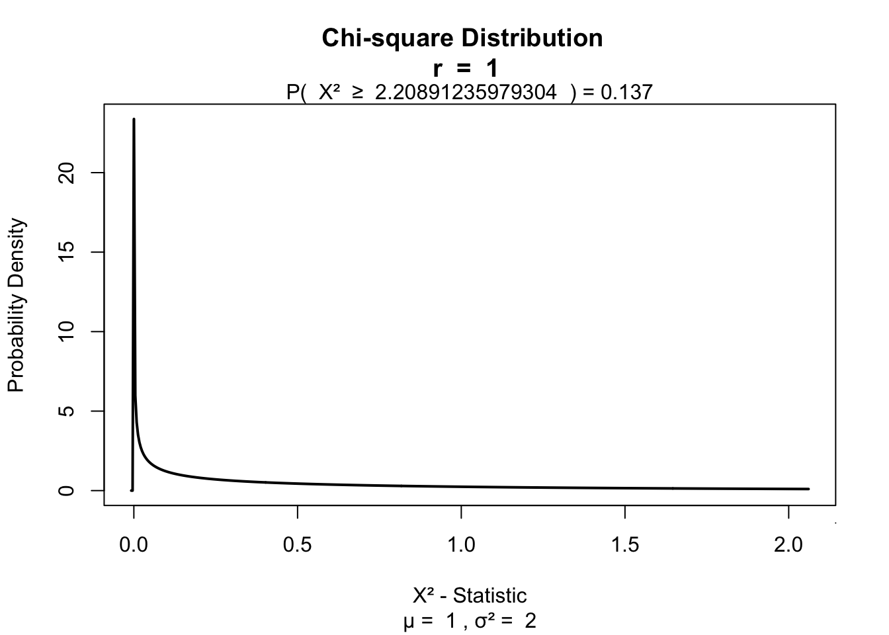

Chi squared test
Klinkenberg
15 oct 2020
Inhoud
\(\chi^2\) test
Relation between categorical variables
\(\chi^2\) test
A ’‘’chi-squared test’’‘, also written as \(\chi^2\) test, is any statistical hypothesis test wherein the sampling distribution of the test statistic is a chi-squared distribution when the null hypothesis is true. Without other qualification, ’chi-squared test’ often is used as short for Pearson’s chi-squared test.
Chi-squared tests are often constructed from a Lack-of-fit sum of squares#Sums of squares|sum of squared errors, or through the Variance Distribution of the sample variance|sample variance. Test statistics that follow a chi-squared distribution arise from an assumption of independent normally distributed data, which is valid in many cases due to the central limit theorem. A chi-squared test can be used to attempt rejection of the null hypothesis that the data are independent.
Source: wikipedia
\(\chi^2\) test statistic
\[\chi^2 = \sum \frac{(\text{observed}_{ij} - \text{model}_{ij})^2}{\text{model}_{ij}}\]
Contingency table
|
\[\text{observed}_{ij} = \begin{pmatrix} o_{11} & o_{12} & \cdots & o_{1j} \\ o_{21} & o_{22} & \cdots & o_{2j} \\ \vdots & \vdots & \ddots & \vdots \\ o_{i1} & o_{i2} & \cdots & o_{ij} \end{pmatrix}\] |
\[\text{model}_{ij} = \begin{pmatrix} m_{11} & m_{12} & \cdots & m_{1j} \\ m_{21} & m_{22} & \cdots & m_{2j} \\ \vdots & \vdots & \ddots & \vdots \\ m_{i1} & m_{i2} & \cdots & m_{ij} \end{pmatrix}\] |
\(\chi^2\) distribution
The \(\chi^2\) distribution describes the test statistic under the assumption of \(H_0\), given the degrees of freedom.
\(df = (r - 1) (c - 1)\) where \(r\) is the number of rows and \(c\) the amount of columns.
chi = seq(0,8,.01)
df = c(1,2,3,6,8,10)
col = rainbow(n = length(df))
plot( chi, dchisq(chi, df[1]), lwd = 2, col = col[1], type="l",
main = "Chi squared distributions",
ylab = "Density",
ylim = c(0,1),
xlab = "Chi squared")
lines(chi, dchisq(chi, df[2]), lwd = 2, col = col[2], type="l")
lines(chi, dchisq(chi, df[3]), lwd = 2, col = col[3], type="l")
lines(chi, dchisq(chi, df[4]), lwd = 2, col = col[4], type="l")
lines(chi, dchisq(chi, df[5]), lwd = 2, col = col[5], type="l")
lines(chi, dchisq(chi, df[6]), lwd = 2, col = col[6], type="l")
legend("topright", legend = paste("k =",df), col = col, lty = 1, bty = "n")
Example
Data
Calculating \(\chi^2\)
observed <- table(results[,c("fluiten","sekse")])
observed## sekse
## fluiten Man Vrouw
## Ja 44 78
## Nee 10 32\[\text{observed}_{ij} = \begin{pmatrix} 44 & 78 \\ 10 & 32 \\ \end{pmatrix}\]
Calculating the model
\[\text{model}_{ij} = E_{ij} = \frac{\text{row total}_i \times \text{column total}_j}{n }\]
n = sum(observed)
ct1 = colSums(observed)[1]
ct2 = colSums(observed)[2]
rt1 = rowSums(observed)[1]
rt2 = rowSums(observed)[2]
addmargins(observed)## sekse
## fluiten Man Vrouw Sum
## Ja 44 78 122
## Nee 10 32 42
## Sum 54 110 164Calculating the model
\[\text{model}_{ij} = E_{ij} = \frac{\text{row total}_i \times \text{column total}_j}{n }\]
model = matrix( c((ct1*rt1)/n,
(ct2*rt1)/n,
(ct1*rt2)/n,
(ct2*rt2)/n),2,2,byrow=T
)
model## [,1] [,2]
## [1,] 40.17073 81.82927
## [2,] 13.82927 28.17073\[\text{model}_{ij} = \begin{pmatrix} 40.1707317 & 81.8292683 \\ 13.8292683 & 28.1707317 \\ \end{pmatrix}\]
observed - model
observed - model## sekse
## fluiten Man Vrouw
## Ja 3.829268 -3.829268
## Nee -3.829268 3.829268Calculating \(\chi^2\)
\[\chi^2 = \sum \frac{(\text{observed}_{ij} - \text{model}_{ij})^2}{\text{model}_{ij}}\]
# Calculate chi squared
chi.squared <- sum((observed - model)^2/model)
chi.squared## [1] 2.125042Testing for significance
\(df = (r - 1) (c - 1)\)
df = (2 - 1) * ( 2 - 1)
library('visualize')
visualize.chisq(chi.squared,df,section='upper')
Fisher’s exact test
Calculates axact \(\chi^2\) for small samples.
- Cell size < 5
Yates’s correction
For 2 x 2 contingency tables.
\[\chi^2 = \sum \frac{ ( | \text{observed}_{ij} - \text{model}_{ij} | - .5)^2}{\text{model}_{ij}}\]
# Calculate Yates's corrected chi squared
chi.squared.yates <- sum((abs(observed - model) - .5)^2/model)
chi.squared.yates## [1] 1.606326visualize.chisq(chi.squared.yates,df,section='upper')
Likelihood ratio
Alternatieve to Pearson’s \(\chi^2\).
\[L \chi^2 = 2 \sum \text{observed}_{ij} ln \left( \frac{\text{observed}_{ij}}{\text{model}_{ij}} \right)\]
# ln is log
lx2 = 2 * sum(observed * log(observed / model) ); lx2## [1] 2.208912visualize.chisq(lx2,df,section='upper')
Standardized residuals
\[\text{standardized residuals} = \frac{ \text{observed}_{ij} - \text{model}_{ij} }{ \sqrt{ \text{model}_{ij} } }\]
(observed - model) / sqrt(model)## sekse
## fluiten Man Vrouw
## Ja 0.6041725 -0.4233129
## Nee -1.0297130 0.7214674Effect size
Odds ratio based on the observed values
odds <- round( observed, 2); odds## sekse
## fluiten Man Vrouw
## Ja 44 78
## Nee 10 32\[\begin{pmatrix} a & b \\ c & d \\ \end{pmatrix}\]
\[OR = \frac{a \times d}{b \times c} = \frac{44 \times 32}{78 \times 10} = 1.8051282\]
Odds
## sekse
## fluiten Man Vrouw
## Ja 44 78
## Nee 10 32The man and women ratio of people that can whisle and the ratio of those who can’t whistle
- Can wistle \(\text{Odds}_{mf} = \frac{ 44 }{ 78 }\) = 0.5641026
- Can’t wistle \(\text{Odds}_{mf} = \frac{ 10 }{ 32 }\) = 0.3125
Odds ratio
Is the ratio of these odds.
\[OR = \frac{\text{wistle}}{\text{can't wistle}} = \frac{0.5641026}{0.3125} = 1.8051282\]